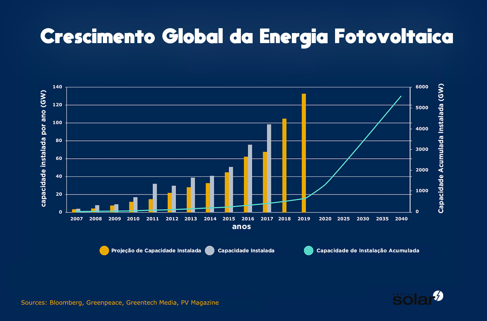

Incentivados pela disciplina de PCA, matéria que envolve um projeto de introdução às aplicações web,
criamos um site que possa instruir e informar nossa comunidade sobre como novas tecnologias podem ser
usadas na preservação do meio ambiente. O site tem como objetivo explicar e simular uma instalação de
painel solar residencial, que vai de acordo com o tema que escolhemos para realizar o trabalho.
A Organização das Nações Unidas definiu metas para toda comunidade global se pautar em termos de avanços
sociais, critérios científicos e políticas públicas. Nosso tema é Energia Limpa e Acessível então a
proposta desse site é canalizar a importância dessa questão e sugerir alguma solução que buscamos no mercado.
A consciência e responsabilização pelo meio ambiente também é um ato importante que envolveu todo o estudo
feito pelos alunos da Unigranrio em cima desta pesquisa. Nossa intenção é demonstrar que podemos repensar o
consumo de energia e como a web pode ser uma ferramenta propulsora desses avanços porque além de informar,
atrair atenção do público, pode e já comercializa soluções inovadoras.